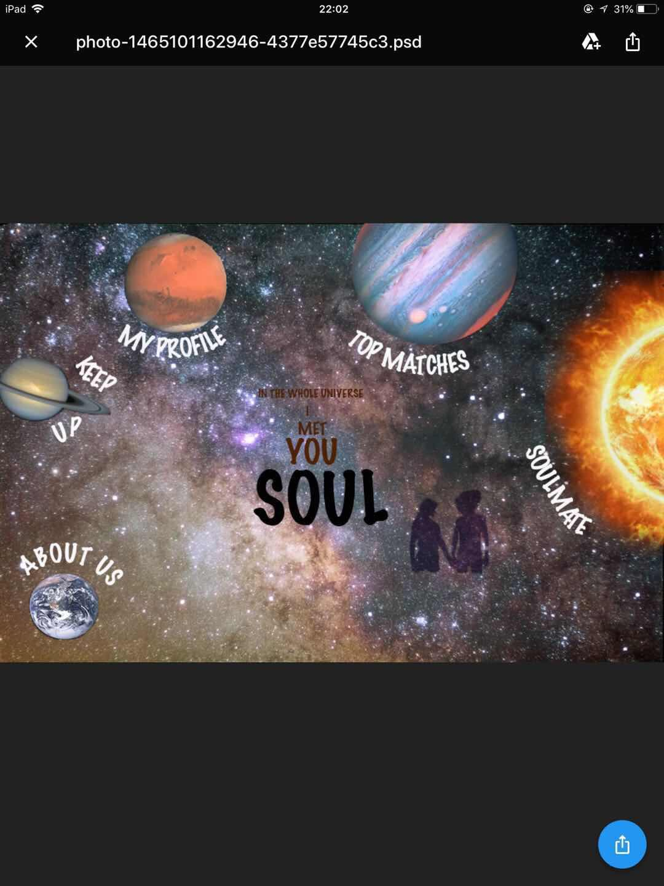
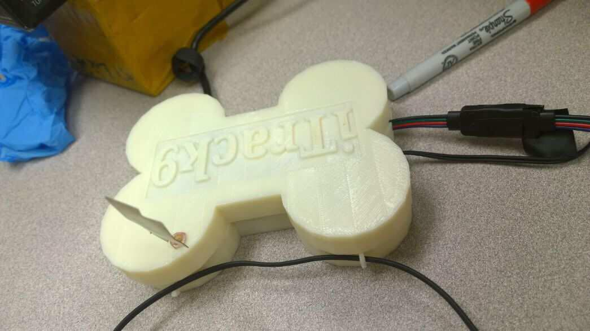
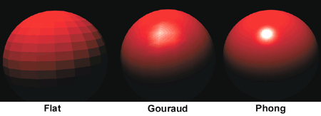
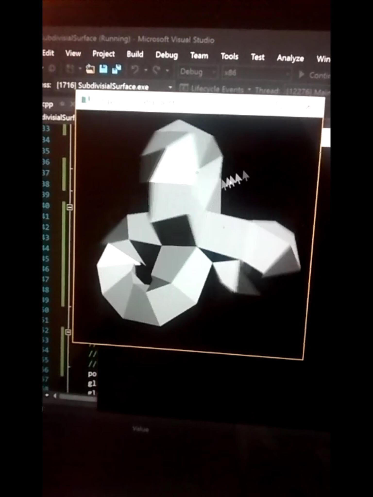
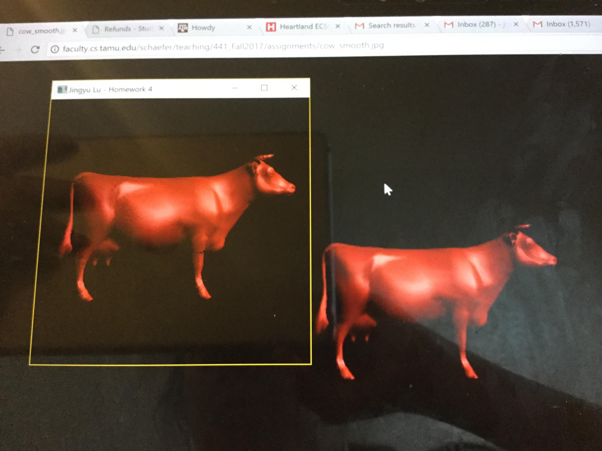

Web Page Design with Photoshop
Valencia College
Objective: Designing a home page layout for a social media website that aims for finding people's soulmates.
Smart Dog Collar
Texas A&M University
Objective: This project implemented an Arduino microcontroller controlled dog collar in a three-people team which allows users to log into the website to monitoring the health condition and the location of the pet. The collar has twi clips goes into pets ear to monitoring the heart rate and the temperature. The microcontroller is located on the collar with a GPS
Responsible for implimenting, testing and evaluating all the sensors in our design includes the heart-rate sensor, the temperature sensor, RFID, and GPS with Arduino feather. Also, reported to professor and demonstrate to company representatives
Polygon Raterization
Texas A&M University
Objective: This project implemented three different shading models: flat, gouraud,, and phong shading on given 3D object such as cube, sphere and cow with given ambient, diffuse, specular reflection coeefficients, and project them onto the screen
Subdivision Surface
Texas A&M University
Objective: This project implements the subdivision algorithm which reads in an OBJ file which subdivides and averages the surfaces when pressing different keys. Also, it would allow users to zoom in onto the shape and be able to use the mouse to rotate the shape around to observe the changes.
Ray Tracing
Texas A&M University
Objective: This project implements ray tracing which creates a scene with two different light sources at any different locations and show their reflections on different colored spheres, infinite cylinders and planes with different reflecting rate and different ambient, diffuse, specular reflection coeefficients.
